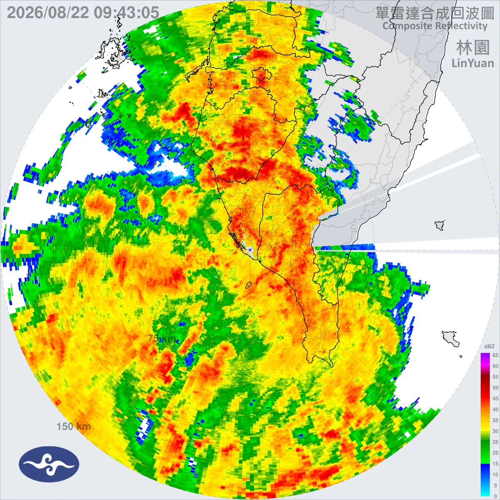
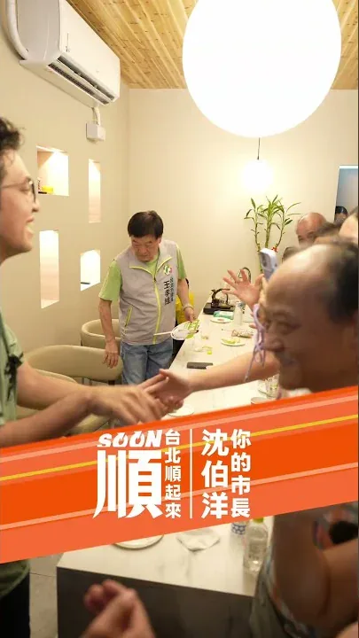
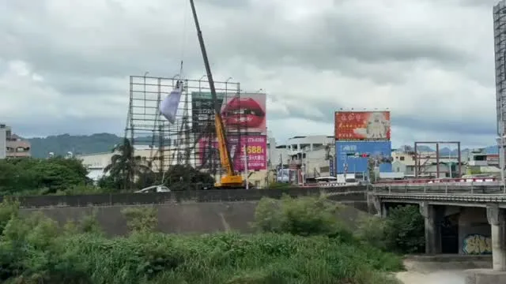
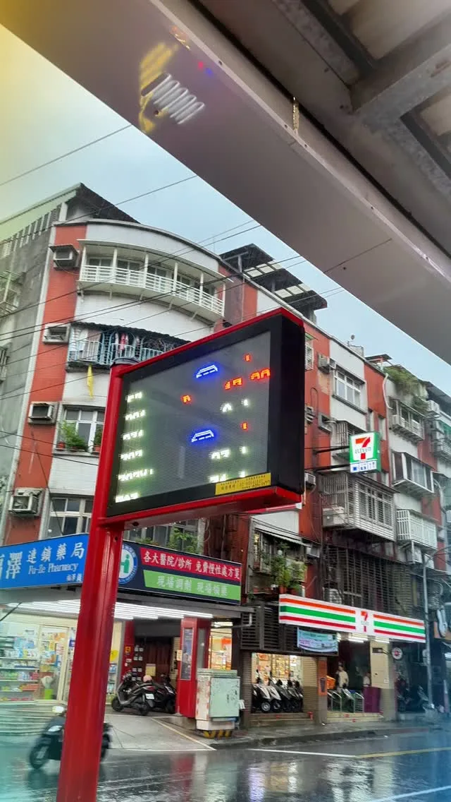
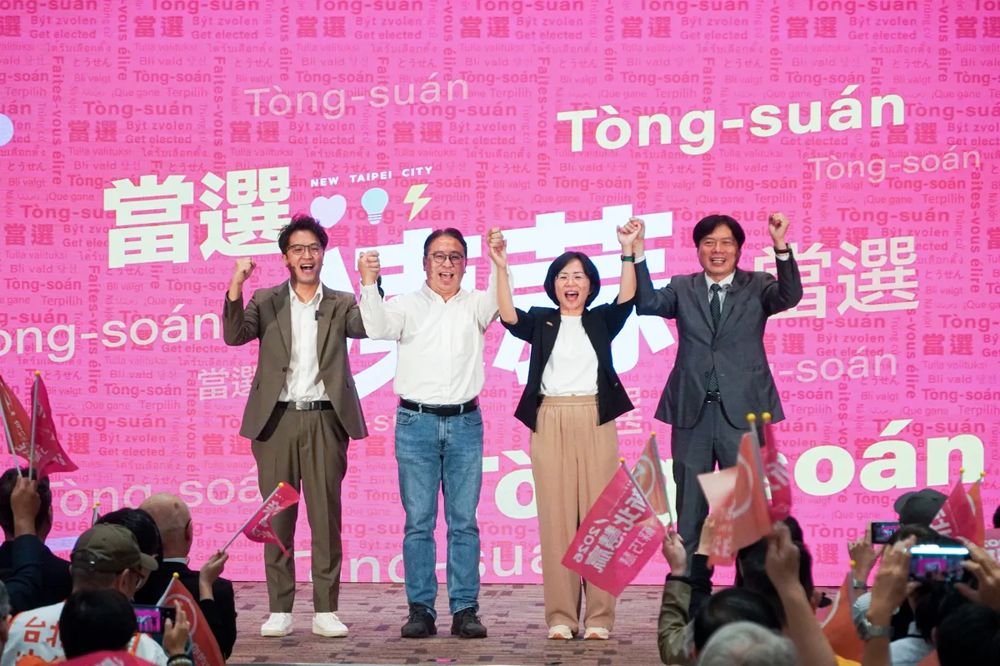
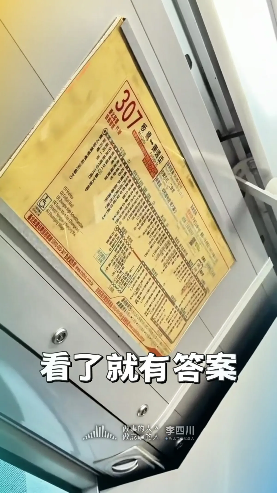

@hsiehlungchieh:⚠️ 因應強降雨及致災風險，明（24）日臺南市停止上班上課⚠️ 龍介提醒大家，密切留意最新天氣與災情資訊，非必要請減少外出！行車也請減速慢行，注意積淹水路段，多一分防範、多一分安全！
Posts
@hsiehlungchieh:⚠️ 因應強降雨及致災風險，明（24）日臺南市停止上班上課⚠️ 龍介提醒大家，密切留意最新天氣與災情資訊，非必要請減少外出！行車也請減速慢行，注意積淹水路段，多一分防範、多一分安全！

今天早上再次來到龍潭，和鄉親朋友一起為 張贊聞 挺贊的議員候選人加油！我和贊聞同為在地客家子弟，一樣身為孩子的爸爸，一樣關心這片土地，也希望把家鄉跟家人照顧得更好。 所以我已經提出，要增加托育資源，要把敬老愛心卡提高到每月1200點並擴大使用。未來進入市府，在地鄉親關心的龍潭市區舊公所、舊鄉代會的土地，也要重新規劃活化。讓每個世代都能在桃園宜居宜業。 世杰過去擔任立委期間，就關心爭取新梅龍快速道路、板龍快速道路、高原交流道、台66線全線高架化等交通建設。 因為我知道，龍潭進步的腳步不能停下，台積電進駐龍科三期、桃竹苗大矽谷、公車路網與生活機能，都要做得更快更好。人潮進來龍潭後，我們要串聯客庄文化、茶產業、石門水庫等特色，讓觀光發展一起升級！ 感謝張火爐主委、衛福部呂建德次長、龍星里張金財里長，以及到場相挺的每一位市民。 龍潭的發展非常關鍵！未來世杰在市府、贊聞在議會，我們一起加快龍潭發展的速度，讓心龍潭 動起來💖

@schuanglawyer:Lokah su ga? 你好嗎？原住民議員的選區跟市長的一樣大，這些日子，謝卓儒議員候選人 @hsiehchoju 跟我一樣走遍13區，傾聽族人的心聲。 卓儒雖然是第一次投入選戰，但上台時穩健又自信。這些年來，他歷經伍麗華委員 @saidai_reseres 、林志強議員兩位強棒扎實特訓，對族人的服務從未間斷，我相信他絕對會是未來議會最強即戰力💪 我跟原住民事務的緣分很深，從12年前在市府服務，就有原住民族學者跟我說，「從沒看過這麼支持我們的漢人官員」。進入立法院後，我也時常向陳瑩委員 @asenayig 、伍麗華委員請益，全力捍衛族人權益。 卓儒跟我提過，文化傳承，是原住民族人的根。所以當市府縮減返鄉參與歲時祭儀的交通費，大家都難以接受。我跟卓儒主張，交通補貼應恢復為來回程，並檢討繁瑣的核銷與申請門檻，鼓勵大家跟原鄉維繫連結，讓資源跟主體性回到族人身上。 桃原要更好！感謝族人朋友的熱情，世杰跟卓儒一定會全力以赴，讓心桃原、動起來💖

送別老戰友，劉發現里長 今天，啟臣懷著萬分不捨的心情，來到東勢送別下新里的大家長，也是我並肩打拚多年的老戰友—劉發現里長。 連任七屆、服務近30年，您把人生最寶貴的歲月都奉獻給山城，更以認真勤奮的服務，獲得「特優里長」肯定。一路走來，無論地方大小事，我們總是一起奔走、一起解決；從改善生活環境到爭取興建活動中心，每一項成果，都留下我們共同打拚的足跡。 我知道，您生前最掛心的「東豐快」，正一步步朝完工邁進。請劉里長放心，接下來我會繼續緊盯進度、全力督促，將您對山城的期盼接棒完成。 謝謝您，一生為下新里、為東勢無私付出。謹向家屬致上最深切的慰問與敬意。 老戰友，一路好走，我們永遠懷念您。 #東勢下新里 #劉發現里長 #東豐快 #東勢山城


@zenolai:今天受低壓帶及西南風影響，高雄市有局部大雨或豪雨，市府豪雨災害應變中心已於上午提升為二級開設，全面啟動防災應變機制。 目前市區已有多處短延時強降雨，部分路段出現積淹水情形，高雄機場也因雷雨影響暫時停止地面作業。 此外，農業部稍早針對桃源區及六龜區發布了39條土石流黃色警戒，以及大規模崩塌警戒，六龜區(興龍里)、(新發里)。請上述警戒區域的市民朋友，務必配合市府和區公所的防救災指示，迅速落實撤離工作，確保自身安全。 請市民朋友務必注意瞬間大雨、雷擊和強風。行車用路請放慢車速，並避免前往山區和溪河附近活動。接下來的雨勢可能還會加強，我會持續緊盯各項災情和應變措施。請大家出門務必小心，注意安全。

一晚兩場，從南區跑到南屯，臺中升級的腳步不能停！💪 今晚感謝羅廷瑋委員、 林霈涵-台中市議員（東區、南區）、 李中愛台中議員、 廖偉翔委員、 林敏霖前議長與劉士州議員接力相挺，也謝謝柳采葳議員從臺北趕來臺中一路從南區挺到南屯。偉翔一句「 #發兩萬、#打皮蛇、 #鞭壞人」，更把現場氣氛炒到最高點！ 從皮蛇疫苗補助、敬老愛心卡當年度不按月歸零，到校園廁所改善、免費公車、捷運加速，以及AI帶動產業升級，啟臣要做的，就是把市民在意的事一件件做好。 接棒盧秀燕，不只延續好政策，更要加速建設、升級臺中。臺中只能前進，不能後退；我們一起守住幸福，讓世界看見臺中！ #臺中升級 #幸福加給 #臺中啟程 #打造旗艦城

大雨中接著趕到內壢☔️看到這麼多市民朋友，來到中壢周杰倫彭俊豪議員的座談會現場，真的非常感動、也非常感謝。 俊豪已經有三屆議員的歷練跟扎根，還是非常勤跑，我在立委、法務部次長任內，跑行程就常常遇到俊豪。無論是交通、教育、公園到社會福利，只要是市民在乎的事，都能看見俊豪在第一線奔走的認真身影。 對內壢人來說，交通是大家最有感的問題之一，我剛剛從桃園區過來的路上，也塞了很久。這裡人口密集、學校多、工業區通勤需求大，鐵路地下化施工期間的交通壅塞，更是鄉親每天都在面對的問題，如同俊豪所說，現在的中壢就像一個大型工地。 未來世杰進入市政府，會加速推動鐵路地下化、做好施工期間交通配套，重新檢討公車路線與班次，改善校園周邊人行環境，讓軌道、公車、道路與通學安全一起升級。 醫療也是市民最關心的事，中壢以及整個南桃園人口持續成長，但醫療資源跟不上人口增加的速度。未來我會主動媒合醫學中心、大學與醫療體系，優先發展癌症、兒童、高齡及急重症等特色醫療，同時積極為桃園第二座醫學中心布局，讓市民就醫更便利。 感謝大雨中來到現場的市民，還有張火爐主委、興國里彭政銘里長、中建里李應偉里長、舊明里羅善婷里長、中壢車站商圈發展協會湯玟琪理事長，在風雨中堅持來為俊豪跟世杰加油。 好的議員，會為地方爭取、為鄉親發聲。好的市長，則要把這些需求化為政策、把建設加速完成。讓桃園更進步，請支持杰出世代、豪邁前進！讓心中壢，動起來💖

今天的雨下好大，卻澆不熄鄉親的熱情，傍晚和 黃家齊議員來到桃園蓮華寺，和大家聊聊桃園發展，一起談我們對未來的想像。 同樣身為父親，我們更能理解年輕家庭在生活中面臨的需求，這些年來，家齊在議會持續努力，從交通、停車、托育與兒童政策，到長照等議題，都積極關心，對於市民反映的問題，也持續追蹤、督促市府確實改善。 家齊始終相信，只要把每一項建設及生活中的問題，持續做好、做得更完善，就能讓大家感受到桃園正在蛻變，而這份對市民朋友的重視及對公共事務的堅持，就是家齊一直以來的努力的目標，也是他始終如一為鄉親朋友服務的態度。 世杰知道，桃園區人口持續成長，但交通混亂、停車空間不足、路幅小且人行道規劃不良、公車路網不符需求、捷運綠線延宕等問題頻頻發生，市府卻沒有積極處理，導致桃園前進的腳步停滯。我希望能把桃園顧好，讓桃園不只是快速成長，更要成為一座讓人安心成家、幸福樂齡的宜居城市✨ 感謝關心地方發展的市民朋友，以及張火爐主委、北桃園競總黃宗源總幹事、余宛如委員、呂榮華前縣議員、中埔里陳訓誠里長、永安里莊育達里長、慈文里錡春發里長、長德里雷淑華里長、西埔里呂春琪里長、長美里林秀貞里長、蓮華寺呂長江副董事長都來到現場，從大家的熱情回應，我們看見桃園的希望！ 家齊最了解地方的需求，未來世杰會跟家齊合作，把地方的聲音帶進市府，讓大家都能感受到桃園的進步，從交通、托育到照顧長輩，一項項來完成。讓心桃園，動起來💖


從爭取好孕專車延長補助，到推動內科企業附設育兒設施與托兒津貼。從親子照顧、通學安全到社區建設，王孝維議員把地方每一個需要，都放在心上、做到實處。⠀未來我們會繼續並肩努力，一起讓港湖更好、讓台北順起來！

@hsiehlungchieh:回覆網友陳情：中西區忠義路一段85巷口空地以前是防空用地，還有兩家民宅，現變成了南市動保處專用的停車場並設置柵欄


@a_chun1973:捷運藍線進太平 全速推動！💪💪

@schuanglawyer:今天早上再次來到龍潭，和鄉親朋友一起為 張贊聞議員候選人 @victory0321 加油！我和贊聞同為在地客家子弟，一樣身為孩子的爸爸，一樣關心這片土地，也希望把家鄉跟家人照顧得更好。 所以我已經提出，要增加托育資源，要把敬老愛心卡提高到每月1200點並擴大使用。未來進入市府，在地鄉親關心的龍潭市區舊公所、舊鄉代會的土地，也要重新規劃活化。讓每個世代都能在桃園宜居宜業。 世杰過去擔任立委期間，就關心爭取新梅龍快速道路、板龍快速道路、高原交流道、台66線全線高架化等交通建設。 因為我知道，龍潭進步的腳步不能停下，台積電進駐龍科三期、桃竹苗大矽谷、公車路網與生活機能，都要做得更快更好。人潮進來龍潭後，我們要串聯客庄文化、茶產業、石門水庫等特色，讓觀光發展一起升級！ 龍潭的發展非常關鍵！未來世杰在市府、贊聞在議會，我們一起加快龍潭發展的速度，讓心龍潭 動起來💖

Lokah su ga? 你好嗎？原住民議員的選區跟市長的一樣大，這些日子， 謝卓儒議員候選人跟我一樣走遍13區，傾聽族人的心聲。 卓儒雖然是第一次投入選戰，但上台時穩健又自信。這些年來，他歷經 伍麗華｜Saidai / Reseres委員、 青年好強 林志強議員兩位強棒扎實特訓，對族人的服務從未間斷，我相信他絕對會是未來議會最強即戰力💪 我跟原住民事務的緣分很深，從12年前在市府服務，就有原住民族學者跟我說，「從沒看過這麼支持我們的漢人官員」。進入立法院後，我也時常向 陳瑩（Ying Chen）委員、伍麗華委員請益，全力捍衛族人權益。 卓儒跟我提過，文化傳承，是原住民族人的根。所以當市府縮減返鄉參與歲時祭儀的交通費，大家都難以接受。我跟卓儒主張，交通補貼應恢復為來回程，並檢討繁瑣的核銷與申請門檻，鼓勵大家跟原鄉維繫連結，讓資源跟主體性回到族人身上。 桃園是全國原住民第二多的城市，青埔有陽光劇場、KIRI國際原住民族文創園區，未來有原文會、原民台進駐，具備成為原民文化新都心的潛力。不過近年來，園區面臨設備、營運停滯的瓶頸，未來世杰進市府，會結合在地特色、青年文創，把桃原推向國際，打造全新風貌。 週六雨夜，感謝來到現場關心市政的族人朋友，感謝張火爐主委、苗栗縣黨部陳詩弦主委、 鄭淑方-桃園市議員、伍麗華委員服務團隊、陳瑩委員服務團隊、民進黨中央黨部原民部谷暮‧哈就主任、桃園市總族群領袖林欽明，以及多位部落頭目到場給我們滿滿鼓勵。 桃原要更好！感謝族人朋友的熱情，世杰跟卓儒一定會全力以赴，讓心桃原、動起來💖

@schuanglawyer:一早，我和國漳 @lin.kuo.chang ，分別從桃園、宜蘭趕到台北，來為伯洋 @pumashen 、巧慧 @su.chiaohui 應援💪 網友非常有創意，從「洋流慧聚」，接到氣勢磅礴的下聯「勝利漳杰」。我們都是律師出身，過去在體制內，我們用最嚴謹的法學專業守護人民權利、捍衛民主法治。 現在，我們帶著專業返鄉，將串聯成推動區域合作、強化城市治理的最強連線，用新思維跟新模式，攜手推動交通建設、產業布局、青年住宅，讓市民生活更宜居宜業！ 感謝各位先進們，一起現身相挺。 我們不只有專業，更有改變城市的決心。11/28，一起為家鄉打出最漂亮的勝仗！

到立法院說個玩笑，這五個月跑遍新北 29 區，最大的收穫是瘦了五公斤。 說實在，到立法院，是想再讓另一個東西瘦一點。 不是我，是法條。 做工程的人最清楚，一個案子動不了，卡的常常不是工地。不是錢還沒到，就是法還沒改。 軌道要動，等的是中央的預算。都更要動，等的是那幾條該修沒修的老法規。 那，這兩件事光靠地方政府自己還不夠，還要立法院點頭。 所以昨天到國民黨團、民眾黨團坐下來談。軌道建設 123、樹林鐵路地下化，還有都更 5 夠力，一項一項報告，一項一項拜託。 有委員跟我說，他的選區跟新北接壤，希望以後合作多一點。生活圈本來就是連在一起的，行政區的線是畫給公文看的，不是畫給通勤的人看的。 新北 400 多萬人等的，不只是一張漂亮的路網圖。是那一段路，什麼時候可以真的動工。 五個月瘦五公斤。下一個要瘦的，是法條。

@schuanglawyer:大雨中接著趕到內壢☔️看到這麼多市民朋友，來到「中壢周杰倫」彭俊豪議員 @c_peng 座談會現場，非常感動、也非常感謝。 俊豪有三屆議員的歷練，還是非常勤勞，我在立委、法務部次長任內，跑行程就常遇到俊豪。從交通、教育、公園到社會福利，只要市民在乎，都能看見他在第一線奔走的身影。 對內壢人來說，交通是大家最有感的問題之一，我從桃園區過來的路上也塞了很久。這裡人口密集、學校多、工業區通勤需求大，鐵路地下化施工期間交通壅塞，是鄉親每天都在面對的問題，如同俊豪所說，現在中壢就像一個大工地。 未來世杰進入市府，會加速推動鐵路地下化、做好施工期間交通配套，重新檢討公車路線與班次，改善校園周邊人行環境，讓軌道、公車、道路與通學安全一起升級。 醫療是市民最關心的事，南桃園人口持續成長，但醫療資源跟不上人口增加的速度。未來我會主動媒合醫學中心、大學與醫療體系，優先發展癌症、兒童、高齡及急重症等特色醫療，同時積極為桃園第二座醫學中心布局，讓市民就醫更便利。 好的議員，要為地方爭取、為鄉親發聲。好的市長，則要把需求化為政策、把建設加速完成。讓桃園更進步，請支持杰出世代、豪邁前進！讓心中壢，動起來💖

@schuanglawyer:今天的雨下好大，卻澆不熄鄉親的熱情，傍晚和黃家齊議員 @jack790218 來到桃園蓮華寺，和大家聊聊桃園發展，一起談我們對未來的想像。 同樣身為父親，我們更能理解年輕家庭在生活中面臨的需求，這些年來，家齊在議會持續努力，從交通、停車、托育與兒童政策，到長照等議題，都積極關心，對於市民反映的問題，也持續追蹤、督促市府確實改善。 家齊始終相信，只要把每一項建設及生活中的問題，持續做好、做得更完善，就能讓大家感受到桃園正在蛻變，而這份對市民朋友的重視及對公共事務的堅持，就是家齊一直以來的努力的目標，也是他始終如一為鄉親朋友服務的態度。 世杰知道，桃園區人口持續成長，但交通混亂、停車空間不足、路幅小且人行道規劃不良、公車路網不符需求、捷運綠線延宕等問題頻頻發生，市府卻沒有積極處理，導致桃園前進的腳步停滯。我希望能把桃園顧好，讓桃園不只是快速成長，更要成為一座讓人安心成家、幸福樂齡的宜居城市✨ 家齊最了解地方的需求，未來世杰會跟家齊合作，把地方的聲音帶進市府，讓大家都能感受到桃園的進步，從交通、托育到照顧長輩，一項項來完成。讓心桃園，動起來💖

@hammer__lee:記錯了，我就回來看。 今天到立法院拜會韓國瑜院長，還有國民黨團、民眾黨團。談新北市政的時候，我唯獨把 307 的路線講錯了。 說實在，有些不好意思。這條線就經過我每天生活的周邊。 有錯就認。做工程的人，看見問題，就找出解方。 所以我下午去坐了一趟。 今天上車前，雙北突然下了大雨，我也淋得有些狼狽。淋著雨等車的，不只我一個。 307 是雙北運量最大的一條公車。2024 年載客 1639 萬人次，全台唯一破千萬。 基北北桃的合作平台，走到今天第八年了。這個基礎是有的。 下一步，是把更多交通路網一起放進來。 因為跨市的公車、跨河的橋，本來就不該分兩邊管。 行政本位的問題，不應該讓市民來扛。 減輕市民通勤的負擔，才是真正的目標。 公車路線記錯了，方向不能錯。

從爭取好孕專車延長補助，到推動內科企業附設育兒設施與托兒津貼。從親子照顧、通學安全到社區建設， 王孝維議員把地方的每一個需要，都放在心上、做到實處。 ⠀ 未來我們會繼續並肩努力，一起讓港湖更好、讓台北順起來！
回覆網友陳情：中西區忠義路一段85巷口空地以前是防空用地，還有兩家民宅，現變成了南市動保處專用的停車場並設置柵欄


@su.chiaohui:@tsai_ingwen 小英總統：「看一個政治人物值不值得信任，不只要看她順利的時候說什麼，更要看別人遇到困難的時候，她願不願意站在你那邊，這就是我認識的蘇巧慧。」 感謝小英總統的加持，我們從一開始不被看好，一步一步走到現在，不只已經平手，更有機會贏得勝利。 我也在這段時間負責任的提出城市願景，從區域均衡、產業升級，到育兒、教育、長照、交通，以及新皇冠海岸、鑽石山城等政見。 我們會帶著大家的期待，讓這座城市越來越有希望，讓這座城市進步的速度越來越快！一起出發，迎向勝利！2026新北慧贏！

今天早上再次來到龍潭，和鄉親朋友一起為 張贊聞議員候選人 @victory0321 加油！我和贊聞同為在地客家子弟，一樣身為孩子的爸爸，一樣關心這片土地，也希望把家鄉跟家人照顧得更好。 所以我已經提出，要增加托育資源，要把敬老愛心卡提高到每月1200點並擴大使用。未來進入市府，在地鄉親關心的龍潭市區舊公所、舊鄉代會的土地，也要重新規劃活化。讓每個世代都能在桃園宜居宜業。 世杰過去擔任立委期間，就關心爭取新梅龍快速道路、板龍快速道路、高原交流道、台66線全線高架化等交通建設。 因為我知道，龍潭進步的腳步不能停下，台積電進駐龍科三期、桃竹苗大矽谷、公車路網與生活機能，都要做得更快更好。人潮進來龍潭後，我們要串聯客庄文化、茶產業、石門水庫等特色，讓觀光發展一起升級！ 感謝張火爐主委、衛福部呂建德次長、龍星里張金財里長，以及到場相挺的每一位市民。 龍潭的發展非常關鍵！未來世杰在市府、贊聞在議會，我們一起加快龍潭發展的速度，讓心龍潭 動起來💖

謝謝劉品妡舉辦這場包場登島特別企劃，支持者中有親子家庭，暫時放下忙碌，進到電影院，享受難得的親子時光。 對父母來說，喘息不一定是暫時離開孩子，也可以是好好陪孩子看一場電影、聊聊天。因此，我提出「親子同行卡」，讓家長可以和孩子一起去劇場、書店等地方，還有「家長喘息服務」，增加臨時托育、到宅服務與心理諮商支持；「家長版1999」，讓育兒不再只是每個家庭獨自承擔，而是由整座城市一起陪伴。 品妡始終從孩子與家庭的生活出發。她提出成立「台北市兒童美術館」，讓藝術不只是偶爾參觀的展覽，而能走進孩子的日常，成為每個家庭都能親近的城市資源。她也注重人本交通。曾在議員團隊中，協調里長與店家，推動安居街、師大路、浦城街等巷弄改善。 這就是我們台北隊，有人負責整合市政、有人深耕地方，大家都朝著同一個方向努力。把生活餘裕還給家長，把安全與文化還給孩子，讓台北成為真正照顧人的城市。 請支持台北隊，把政策做到位，讓台北順起來！

一早，我和林國漳縣長候選人 @lin.kuo.chang ，分別從桃園、宜蘭趕到台北，來為沈伯洋 @pumashen 、蘇巧慧 @su.chiaohui 應援💪 網友非常有創意，從「洋流慧聚」，接到氣勢磅礴的下聯「勝利漳杰」。我們都是律師出身，過去在體制內，我們用最嚴謹的法學專業守護人民權利、捍衛民主法治。 現在，我們帶著專業返鄉，將串聯成推動區域合作、強化城市治理的最強連線，用新思維跟新模式，攜手推動交通建設、產業布局、青年住宅，讓市民生活更宜居宜業！ 感謝各位先進們，一起現身相挺。 我們不只有專業，更有改變城市的決心。11/28，一起為家鄉打出最漂亮的勝仗！

一晚兩場，從南區跑到南屯，臺中升級的腳步不能停！💪 今晚感謝羅廷瑋委員、 林霈涵-台中市議員（東區、南區）、 李中愛台中議員、 廖偉翔委員、 林敏霖前議長與劉士州議員接力相挺，也謝謝柳采葳議員從臺北趕來臺中一路從南區挺到南屯。偉翔一句「 #發兩萬、#打皮蛇、 #鞭壞人」，更把現場氣氛炒到最高點！ 從皮蛇疫苗補助、敬老愛心卡當年度不按月歸零，到校園廁所改善、免費公車、捷運加速，以及AI帶動產業升級，啟臣要做的，就是把市民在意的事一件件做好。 接棒盧秀燕，不只延續好政策，更要加速建設、升級臺中。臺中只能前進，不能後退；我們一起守住幸福，讓世界看見臺中！ #臺中升級 #幸福加給 #臺中啟程 #打造旗艦城

大雨中接著趕到內壢☔️看到這麼多市民朋友，來到「中壢周杰倫」彭俊豪議員 @c_peng 的座談會現場，真的非常感動、也非常感謝。 俊豪已經有三屆議員的歷練跟扎根，還是非常勤勞，我在立委、法務部次長任內，跑行程就常常遇到俊豪。無論是交通、教育、公園到社會福利，只要是市民在乎的事，都能看見俊豪在第一線奔走的認真身影。 對內壢人來說，交通是大家最有感的問題之一，我剛剛從桃園區過來的路上，也塞了很久。這裡人口密集、學校多、工業區通勤需求大，鐵路地下化施工期間的交通壅塞，更是鄉親每天都在面對的問題，如同俊豪所說，現在的中壢就像一個大型工地。 未來世杰進入市政府，會加速推動鐵路地下化、做好施工期間交通配套，重新檢討公車路線與班次，改善校園周邊人行環境，讓軌道、公車、道路與通學安全一起升級。 醫療也是市民最關心的事，中壢以及整個南桃園人口持續成長，但醫療資源跟不上人口增加的速度。未來我會主動媒合醫學中心、大學與醫療體系，優先發展癌症、兒童、高齡及急重症等特色醫療，同時積極為桃園第二座醫學中心布局，讓市民就醫更便利。 感謝大雨中來到現場的市民，還有張火爐主委、興國里彭政銘里長、中建里李應偉里長、舊明里羅善婷里長、中壢車站商圈發展協會湯玟琪理事長，在風雨中堅持來為俊豪跟世杰加油。 好的議員，會為地方爭取、為鄉親發聲。好的市長，則要把這些需求化為政策、把建設加速完成。讓桃園更進步，請支持杰出世代、豪邁前進！讓心中壢，動起來💖

今天的雨下好大，卻澆不熄鄉親的熱情，傍晚和黃家齊議員 @jack790218 來到桃園蓮華寺，和大家聊聊桃園發展，一起談我們對未來的想像。 同樣身為父親，我們更能理解年輕家庭在生活中面臨的需求，這些年來，家齊在議會持續努力，從交通、停車、托育與兒童政策，到長照等議題，都積極關心，對於市民反映的問題，也持續追蹤、督促市府確實改善。 家齊始終相信，只要把每一項建設及生活中的問題，持續做好、做得更完善，就能讓大家感受到桃園正在蛻變，而這份對市民朋友的重視及對公共事務的堅持，就是家齊一直以來的努力的目標，也是他始終如一為鄉親朋友服務的態度。 世杰知道，桃園區人口持續成長，但交通混亂、停車空間不足、路幅小且人行道規劃不良、公車路網不符需求、捷運綠線延宕等問題頻頻發生，市府卻沒有積極處理，導致桃園前進的腳步停滯。我希望能把桃園顧好，讓桃園不只是快速成長，更要成為一座讓人安心成家、幸福樂齡的宜居城市✨ 感謝關心地方發展的市民朋友，以及張火爐主委、北桃園競總黃宗源總幹事、余宛如委員、呂榮華前縣議員、中埔里陳訓誠里長、永安里莊育達里長、慈文里錡春發里長、長德里雷淑華里長、西埔里呂春琪里長、長美里林秀貞里長、蓮華寺呂長江副董事長都來到現場，從大家的熱情回應，我們看見桃園的希望！ 家齊最了解地方的需求，未來世杰會跟家齊合作，把地方的聲音帶進市府，讓大家都能感受到桃園的進步，從交通、托育到照顧長輩，一項項來完成。讓心桃園，動起來💖

記錯了，我就回來看。 今天到立法院拜會韓國瑜院長，還有國民黨團、民眾黨團。談新北市政的時候，我唯獨把 307 的路線講錯了。 說實在，有些不好意思。這條線就經過我每天生活的周邊。 有錯就認。做工程的人，看見問題，就找出解方。 所以我下午去坐了一趟。 今天上車前，雙北突然下了大雨，我也淋得有些狼狽。淋著雨等車的，不只我一個。 307 是雙北運量最大的一條公車。2024 年載客 1639 萬人次，全台唯一破千萬。 基北北桃的合作平台，走到今天第八年了。這個基礎是有的。 下一步，是把更多交通路網一起放進來。 因為跨市的公車、跨河的橋，本來就不該分兩邊管。 行政本位的問題，不應該讓市民來扛。 減輕市民通勤的負擔，才是真正的目標。 公車路線記錯了，方向不能錯。
記錯了，我就回來看。 今天到立法院拜會韓國瑜院長，還有國民黨團、民眾黨團。談新北市政的時候，我唯獨把 307 的路線講錯了。 說實在，有些不好意思。這條線就經過我每天生活的周邊。 有錯就認。做工程的人，看見問題，就找出解方。 所以我下午去坐了一趟。 今天上車前，雙北突然下了大雨，我也淋得有些狼狽。淋著雨等車的，不只我一個。 307 是雙北運量最大的一條公車。2024 年載客 1639 萬人次，全台唯一破千萬。 基北北桃的合作平台，走到今天第八年了。這個基礎是有的。 下一步，是把更多交通路網一起放進來。 因為跨市的公車、跨河的橋，本來就不該分兩邊管。 行政本位的問題，不應該讓市民來扛。 減輕市民通勤的負擔，才是真正的目標。 公車路線記錯了，方向不能錯。

❤️巧慧貼心顧長輩！政見一次看！ 新北市有超過82萬的長者人口，因此照顧長輩，是我擔任新北市長最重要的工作之一，未來我會重點推動： ✅ #敬老卡每月1000點，可以搭公車、買東西，生活更便利。 ✅ 長輩 #假牙補助最高5萬元，有好的牙口吃飯，身體更健康。 ✅ 入住住宿式長照機構補助提升至 #每年24萬元，為家庭減負擔。 ✅ 簡化機構與照顧者行政負擔，讓照顧者能把精力留在專業發揮上。 ✅ 出院後居家服務和輔具 #一次到位，同時帶入專業復能，確保照顧不中斷。 ✅ 發展 #AI智慧照顧，減輕照顧人力負擔，並建立以租代買 平台，降低導入門檻。 未來，我不但會推動長輩福利、提高長照量能與補助，也會以新觀念成為「照顧者的照顧者」，讓新北長輩安心生活，也實質為家庭、照顧者減輕負擔，打造更溫暖的長照環境！